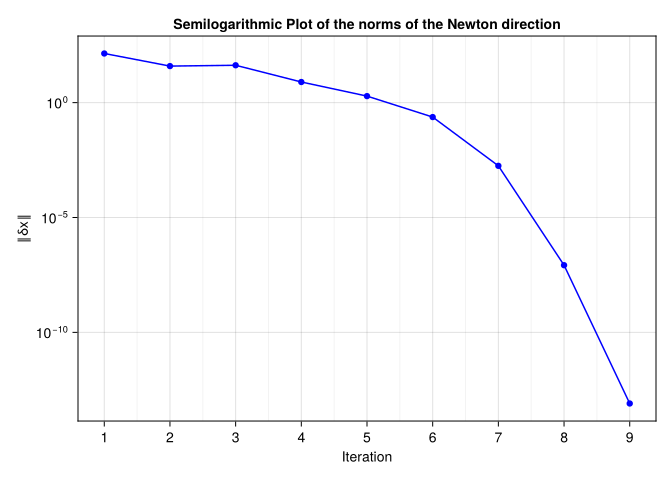
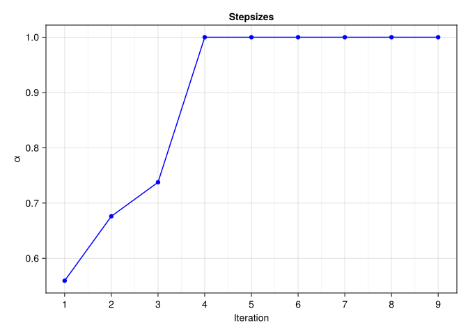

Inextensible Rod
Laura Weigl, Ronny Bergmann, and Anton Schiela 2025-11-25
using LinearAlgebra
using SparseArrays
using Manopt
using ManoptExamples
using Manifolds
using OffsetArrays
using RecursiveArrayTools
using CairoMakie, Makie, GeometryTypes, ColorsIntroduction
In this example we compute equilibrium states of an inextensible elastic rod by applying Newton’s method on vector bundles which was introduced in [WBS25]. This example reproduces the results from the example in Section 6.3 therein.
We start with the following energy minimization problem
\[\min_{y∈ \mathcal M}\frac{1}{2}\int_{0}^{1} σ(s) ⟨ \ddot y(s),\ddot y(s)⟩ \mathrm{d}s\]
where $\mathcal M := \{y\mid y∈ H^2([0,1];\mathbb{R}^3),\dot y(s)∈ \mathbb S^2 \, \text{on} \, [0,1] \}.$ The quantity $\overline σ > σ(s) ≥ \underline σ>0$ is the flexural stiffness of the rod, and $\dot y$, $\ddot y$ are the derivatives of $y$ with respect to $s∈[0,1]$. Since $\dot y(s) ∈ \mathbb{S}^2$ for all $s∈ [0,1]$ the rod is inextensible with fixed length 1.
In addition the following boundary conditions are imposed:
\[y(0)=y_a ∈ \mathbb{R}^3, \, \dot y(0)=v_a∈ \mathbb{S}^2, \; y(1)=y_b ∈ \mathbb{R}^3, \, \dot y(1)=v_b∈ \mathbb{S}^2.\]
Introducing $v(s):=\dot y(s)$ we reformulate the problem as a mixed problem:
\[\min_{(y,v)∈ Y × \mathcal V} \frac{1}{2}\int_{0}^{1} σ ⟨ \dot v,\dot v⟩ \, \mathrm{d}s \quad \text{ s.t. } \quad \dot y-v = 0,\]
where
\[\begin{align*} Y&=\{y∈ H^2([0,1];\mathbb{R}^3)\,\, : \,\, y(0)=y_a,\,\, y(1)=y_b \},\\ \mathcal V&=\{v∈ H^1([0,1];\mathbb{S}^2)\,\, :\,\, v(0)=v_a,\,\, v(1)=v_b \}. \end{align*}\]
To derive equilibrium conditions for this problem we define the Lagrangian function
\[L(y,v,λ) =\int_{0}^{1} \frac{1}{2} σ \left⟨ \dot v,\dot v \right⟩+λ (\dot y-v)\, \mathrm{d}s\]
using a Lagrangian multiplier $λ ∈ Λ := L_2([0,1];\mathbb R^3)$.
We obtain the following equilibrium conditions via setting the derivatives of the Lagrangian to zero:
\[\begin{align*} \int_0^1 λ (\dot{ϕ_y})\, \mathrm{d}s &= 0 \quad ∀ ϕ_y∈ Y\\ \int_{0}^{1} σ \left⟨ \dot v,\dot{ϕ_v}\right⟩ - λ(ϕ_v) \mathrm{d}s &= 0 \quad ∀ ϕ_v ∈ T_v \mathcal V,\\ \int_{0}^{1} ϕ_λ(\dot y-v) \mathrm{d} s &= 0 \quad ∀ ϕ_λ ∈ Λ. \end{align*}\]
Hence, have to find a zero of the mapping
\[F : Y × \mathcal V × Λ → Y^* × T^*\mathcal V× Λ^*\]
defined by the equilibrium conditions.
For brevity we set $\mathcal X=Y × \mathcal V × Λ$ and $x=(y,v,λ)$ and obtain a mapping $F:\mathcal X → T^*\mathcal X$.
For our example we set $σ \equiv 1$ and
N=50
S = Manifolds.Sphere(2)
R3 = Manifolds.Euclidean(3)
powerS = PowerManifold(S, NestedPowerRepresentation(), N) # power manifold of S
powerR3 = PowerManifold(R3, NestedPowerRepresentation(), N) # power manifold of R^3
powerR3_λ = PowerManifold(R3, NestedPowerRepresentation(), N+1) # power manifold of R^3
product = ProductManifold(powerR3, powerS, powerR3_λ) # product manifold
mutable struct VariationalSpace
manifold::AbstractManifold
degree::Integer
end
test_spaces = ArrayPartition(VariationalSpace(R3, 1), VariationalSpace(S, 1), VariationalSpace(R3, 0))
ansatz_spaces = ArrayPartition(VariationalSpace(R3, 1), VariationalSpace(S, 1), VariationalSpace(R3, 0))
start_interval = 0.0
end_interval = 1.0
discrete_time = range(; start=start_interval, stop = end_interval, length=N+2)
y0 = [0,0,0] # startpoint of rod
y1 = [0.8,0,0] # endpoint of rod
v0 = 1/norm([1,0,2])*[1,0,2] # start direction of rod
v1 = 1/norm([1,0,0.8])*[1,0,0.8] # end direction of rod3-element Vector{Float64}:
0.7808688094430303
0.0
0.6246950475544243As a starting point, we use
y(t) = [t*0.8, 0.1*t*(1-t), 0]
v(t) = [sin(t*π/2+π/4), cos(t*π/2+π/4), 0]
λ(t) = [0.1, 0.1, 0.1]
discretized_y = [y(ti) for ti in discrete_time[2:end-1]]
discretized_v = [v(ti) for ti in discrete_time[2:end-1]]
discretized_λ = [λ(ti) for ti in discrete_time[1:end-1]]
disc_point = ArrayPartition(discretized_y, discretized_v, discretized_λ)([[0.01568627450980392, 0.0019223375624759706, 0.0], [0.03137254901960784, 0.0037677816224529026, 0.0], [0.047058823529411764, 0.005536332179930796, 0.0], [0.06274509803921569, 0.0072279892349096505, 0.0], [0.0784313725490196, 0.008842752787389465, 0.0], [0.09411764705882353, 0.010380622837370242, 0.0], [0.10980392156862746, 0.011841599384851981, 0.0], [0.12549019607843137, 0.013225682429834679, 0.0], [0.14117647058823532, 0.014532871972318341, 0.0], [0.1568627450980392, 0.015763168012302962, 0.0] … [0.6431372549019608, 0.01576316801230296, 0.0], [0.6588235294117647, 0.014532871972318341, 0.0], [0.6745098039215687, 0.013225682429834679, 0.0], [0.6901960784313727, 0.011841599384851978, 0.0], [0.7058823529411765, 0.010380622837370245, 0.0], [0.7215686274509805, 0.008842752787389465, 0.0], [0.7372549019607844, 0.007227989234909656, 0.0], [0.7529411764705882, 0.005536332179930797, 0.0], [0.7686274509803922, 0.0037677816224529004, 0.0], [0.7843137254901961, 0.0019223375624759747, 0.0]], [[0.7285468091117903, 0.6849960196475806, 0.0], [0.7492957662581293, 0.6622354978915302, 0.0], [0.7693339709828789, 0.6388468056519614, 0.0], [0.7886424158350783, 0.6148521285201927, 0.0], [0.8072027855852095, 0.5902742269009196, 0.0], [0.8249974745983023, 0.5651364144225919, 0.0], [0.8420096035339453, 0.5394625358230247, 0.0], [0.8582230353573627, 0.5132769443312207, 0.0], [0.8736223906463696, 0.48660447856685624, 0.0], [0.8881930621796849, 0.4594704389793477, 0.0] … [0.8881930621796849, -0.4594704389793476, 0.0], [0.8736223906463696, -0.4866044785668561, 0.0], [0.8582230353573629, -0.5132769443312204, 0.0], [0.8420096035339453, -0.5394625358230248, 0.0], [0.8249974745983025, -0.5651364144225915, 0.0], [0.8072027855852096, -0.5902742269009195, 0.0], [0.7886424158350784, -0.6148521285201924, 0.0], [0.7693339709828788, -0.6388468056519614, 0.0], [0.7492957662581292, -0.6622354978915302, 0.0], [0.7285468091117903, -0.6849960196475806, 0.0]], [[0.1, 0.1, 0.1], [0.1, 0.1, 0.1], [0.1, 0.1, 0.1], [0.1, 0.1, 0.1], [0.1, 0.1, 0.1], [0.1, 0.1, 0.1], [0.1, 0.1, 0.1], [0.1, 0.1, 0.1], [0.1, 0.1, 0.1], [0.1, 0.1, 0.1] … [0.1, 0.1, 0.1], [0.1, 0.1, 0.1], [0.1, 0.1, 0.1], [0.1, 0.1, 0.1], [0.1, 0.1, 0.1], [0.1, 0.1, 0.1], [0.1, 0.1, 0.1], [0.1, 0.1, 0.1], [0.1, 0.1, 0.1], [0.1, 0.1, 0.1]])In order to apply Newton’s method to find a zero of $F$, we need the linear mapping $Q_{F(x)}^*∘ F'(x)$. Since the sphere is an embedded submanifold of $\mathbb R^3$, we can use the formula
\[Q_{F(x)}^*∘ F'(x)δx\,ϕ = F_{\mathbb R^9}'(x)δx\,ϕ + F(x)(\overset{→}{V_x'}(x)δx\,ϕ)\]
for $x∈ \mathcal X$ and $δx, \, ϕ ∈ T_x \mathcal X$, where $\overset{→}{V}_x(\hat x) ∈ L(T_x \mathcal X, T_{\hat{x}}\mathcal X)$ is a vector transport and
\[F_{\mathbb R^9}'(x)δx^2\, δx^1 = \int_0^1 δλ(\dot ϕ_y) + σ ⟨ \dot{δv}, \dot ϕ_v ⟩ -δλ(ϕ_v) + ϕ_λ(\dot{δy}) - ϕ_λ(δv) \, \mathrm{d}s\]
is the euclidean derivative of $F$.
The part, introduced by the connection is given by
\[F(x)(\overset{→}{V_x'}(x)δx\,ϕ) = \int_0^1 ⟨ \dot v, (P'(v)δv \, ϕ_v)\dot{} \, ⟩ - λ(P'(v)δv \, ϕ_v) \, \mathrm{d}s\]
where $P(v) :\mathbb{R}^3 → T_v\mathbb{S}^2$ denotes the orthogonal projection.
We define a structure that has to be filled for two purposes:
- Definition of an integrands and their derivatives
- Definition of a vector transport and its derivative
mutable struct DifferentiableMapping{F1<:Function,F2<:Function}
value::F1
derivative::F2
endThe following routines define a vector transport and its euclidean derivative. As seen above, they are needed to derive a covariant derivative of $F$.
As a vector transport we use the (pointwise) orthogonal projection onto the tangent spaces, i.e. for $p, q ∈ \mathbb S^2$ and $X ∈ T_p\mathbb S^2$ we set
\[\overset{→}{V}_{p}(q)X = (I-q ⋅ q^T)X ∈ T_q\mathbb S^2.\]
The derivative of the vector transport is then given by
\[\left(\frac{d}{dq}\overset{→}{V}_{p}(q)\big\vert_{q=p}δq\right)X = \left( - δq ⋅ p^T - p ⋅ δq^T\right) ⋅ X.\]
transport_by_proj(S, p, X, q) = X - q*(q'*X)
transport_by_proj_prime(S, p, X, dq) = (- dq*p' - p*dq')*X
transport = DifferentiableMapping(transport_by_proj,transport_by_proj_prime)DifferentiableMapping{typeof(transport_by_proj), typeof(transport_by_proj_prime)}(transport_by_proj, transport_by_proj_prime)The following routines define the integrand of $F$ and its euclidean derivative.
Fy_at(Integrand, y, ydot, T, Tdot) = Tdot'*y.x[3] # y component of F
Fv_at(Integrand, y, ydot, T, Tdot) = ydot.x[2]'*Tdot-T'*y.x[3] # v component of F
Fλ_at(Integrand, y, ydot, T, Tdot) = (ydot.x[1]-y.x[2])'*T # λ component of F
F_prime_yλ_at(Integrand,y,ydot,B,Bdot,T,Tdot) = Tdot'*B # derivative of Fy_at w.r.t. λ (others are zero)
F_prime_vv_at(Integrand,y,ydot,B,Bdot,T,Tdot) = Bdot'*Tdot # derivative of Fv_at w.r.t. v (others are zero)
F_prime_λv_at(Integrand,y,ydot,B,Bdot,T,Tdot) = -B'*T # derivative of Fλ_at w.r.t. v (others are zero)
integrand_vv = DifferentiableMapping(Fv_at,F_prime_vv_at)
integrand_yλ = DifferentiableMapping(Fy_at,F_prime_yλ_at)
integrand_λv = DifferentiableMapping(Fλ_at,F_prime_λv_at)DifferentiableMapping{typeof(Fλ_at), typeof(F_prime_λv_at)}(Fλ_at, F_prime_λv_at)If no vector transport is needed, the identity transport is used as dummy
identity_transport(S, p, X, q) = X
identity_transport_prime(S, p, X, dq) = 0.0*X
id_transport = DifferentiableMapping(identity_transport,identity_transport_prime)DifferentiableMapping{typeof(identity_transport), typeof(identity_transport_prime)}(identity_transport, identity_transport_prime)NewtonEquation
In this example we implement a functor to compute the Newton matrix and the right hand side for the Newton equation
\[Q^*_{F(x)}∘ F'(x)δx + F(x) = 0_x^*\]
by using the assembler provided in ManoptExamples.jl.
It returns the matrix and the right hand side in base representation. Moreover, for the computation of the simplified Newton direction (which is necessary for affine covariant damping) a method returning the assembled right hand side for the simplified Newton equation is provided.
The assembly routines need a function for evaluating the test functions at the left and right quadrature point.
function evaluate(y, i, tloc)
return ArrayPartition(
(1.0-tloc)*y.x[1][i-1]+tloc*y.x[1][i],
(1.0-tloc)*y.x[2][i-1]+tloc*y.x[2][i],
y.x[3][i]
)
end;struct NewtonEquation{Fy, Fv, Fλ, TS, AS, T, O, NM, Nrhs}
integrand_y::Fy
integrand_v::Fv
integrand_λ::Fλ
test_spaces::TS
ansatz_spaces::AS
vectortransport::T
discrete_time_interval::O
A13::NM
A22::NM
A32::NM
A::NM
b1::Nrhs
b2::Nrhs
b3::Nrhs
b::Nrhs
end
function NewtonEquation(M, inty, intv, intλ, test_spaces, ansatz_spaces, VT, discrete_time)
n1 = Int(manifold_dimension(submanifold(M, 1)))
n2 = Int(manifold_dimension(submanifold(M, 2)))
n3 = Int(manifold_dimension(submanifold(M, 3)))
# non-zero blocks of the Newton matrix
A13 = spzeros(n1,n3)
A22 = spzeros(n2,n2)
A32 = spzeros(n3,n2)
A = spzeros(n1+n2+n3, n1+n2+n3)
b1 = zeros(n1)
b2 = zeros(n2)
b3 = zeros(n3)
b = zeros(n1+n2+n3)
return NewtonEquation{typeof(inty), typeof(intv), typeof(intλ), typeof(test_spaces), typeof(ansatz_spaces), typeof(VT), typeof(discrete_time), typeof(A13), typeof(b1)}(inty, intv, intλ, test_spaces, ansatz_spaces, VT, discrete_time, A13, A22, A32, A, b1, b2, b3, b)
end
function (ne::NewtonEquation)(M, VB, p)
n1 = Int(manifold_dimension(submanifold(M, 1)))
n2 = Int(manifold_dimension(submanifold(M, 2)))
n3 = Int(manifold_dimension(submanifold(M, 3)))
ne.A13 .= spzeros(n1,n3)
ne.A22 .= spzeros(n2,n2)
ne.A32 .= spzeros(n3,n2)
ne.b1 .= zeros(n1)
ne.b2 .= zeros(n2)
ne.b3 .= zeros(n3)
Op_y = OffsetArray([y0, p[M, 1]..., y1], 0:(length(p[M, 1])+1))
Op_v = OffsetArray([v0, p[M, 2]..., v1], 0:(length(p[M, 2])+1))
Op_λ = OffsetArray(p[M, 3], 1:length(p[M, 3]))
Op = ArrayPartition(Op_y,Op_v,Op_λ);
# assemble (2,2)-block using the connection
ManoptExamples.get_jacobian_block!(M, Op, evaluate, ne.A22, ne.integrand_v, ne.vectortransport, ne.discrete_time_interval; row_index = 2, column_index = 2, test_space = ne.test_spaces.x[2], ansatz_space = ne.ansatz_spaces.x[2])
# assemble (1,3)-block without connection
ManoptExamples.get_jacobian_block!(M, Op, evaluate, ne.A13, ne.integrand_y, id_transport, ne.discrete_time_interval; row_index = 1, column_index = 3, test_space = ne.test_spaces.x[1], ansatz_space = ne.ansatz_spaces.x[3])
# assemble (3,2)-block without connection
ManoptExamples.get_jacobian_block!(M, Op, evaluate, ne.A32, ne.integrand_λ, id_transport, ne.discrete_time_interval; row_index = 3, column_index = 2, test_space = ne.test_spaces.x[3], ansatz_space = ne.ansatz_spaces.x[2])
ManoptExamples.get_right_hand_side_row!(M, Op, evaluate, ne.b1, ne.integrand_y, ne.discrete_time_interval; row_index=1, test_space = ne.test_spaces.x[1])
ManoptExamples.get_right_hand_side_row!(M, Op, evaluate, ne.b2, ne.integrand_v, ne.discrete_time_interval,; row_index=2, test_space = ne.test_spaces.x[2])
ManoptExamples.get_right_hand_side_row!(M, Op, evaluate, ne.b3, ne.integrand_λ, ne.discrete_time_interval,; row_index=3, test_space = ne.test_spaces.x[3])
ne.A .= vcat(
hcat(spzeros(n1,n1) , spzeros(n1,n2) , ne.A13),
hcat(spzeros(n2,n1), ne.A22 , ne.A32'),
hcat(ne.A13', ne.A32, spzeros(n3,n3))
)
ne.b .= vcat(ne.b1, ne.b2, ne.b3)
return #TODO: Is this correct? # LW: Wir überspeichern A und b und returnen nichts, lässt man das dann einfach weg?
end
function (ne::NewtonEquation)(M, VB, p, p_trial)
n1 = Int(manifold_dimension(submanifold(M, 1)))
n2 = Int(manifold_dimension(submanifold(M, 2)))
n3 = Int(manifold_dimension(submanifold(M, 3)))
btrial_y = zeros(n1)
btrial_v = zeros(n2)
btrial_λ = zeros(n3)
Op_y = OffsetArray([y0, p[M, 1]..., y1], 0:(length(p[M, 1])+1))
Op_v = OffsetArray([v0, p[M, 2]..., v1], 0:(length(p[M, 2])+1))
Op_λ = OffsetArray(p[M, 3], 1:length(p[M, 3]))
Op = ArrayPartition(Op_y,Op_v,Op_λ);
Optrial_y = OffsetArray([y0, p_trial[M,1]..., y1], 0:(length(p_trial[M,1])+1))
Optrial_v = OffsetArray([v0, p_trial[M,2]..., v1], 0:(length(p_trial[M,2])+1))
Optrial_λ = OffsetArray(p_trial[M,3], 1:length(p_trial[M,3]))
Optrial = ArrayPartition(Optrial_y,Optrial_v,Optrial_λ);
ManoptExamples.get_right_hand_side_simplified_row!(M, Op, Optrial, evaluate, btrial_y, ne.integrand_y, id_transport, ne.discrete_time_interval; row_index=1, test_space = ne.test_spaces.x[1])
ManoptExamples.get_right_hand_side_simplified_row!(M, Op, Optrial, evaluate, btrial_v, ne.integrand_v, ne.vectortransport, ne.discrete_time_interval; row_index=2, test_space = ne.test_spaces.x[2])
ManoptExamples.get_right_hand_side_simplified_row!(M, Op, Optrial, evaluate, btrial_λ, ne.integrand_λ, id_transport, ne.discrete_time_interval; row_index=3, test_space = ne.test_spaces.x[3])
return vcat(btrial_y, btrial_v, btrial_λ)
endWe compute the Newton direction $δx$ by solving the linear system given by the base representation of the Newton equation directly and return the Newton direction in vector representation:
function solve_in_basis_repr(problem, newtonstate)
X = (problem.newton_equation.A) \ (-problem.newton_equation.b)
return get_vector(problem.manifold, newtonstate.p, X, DefaultOrthogonalBasis())
end;We adjust the norms for computation of damping factors and stopping criterion
pr_inv = Manifolds.InverseProductRetraction(LogarithmicInverseRetraction(), ProjectionInverseRetraction(), LogarithmicInverseRetraction())
rec = RecordChange(product;
inverse_retraction_method=pr_inv);y_0 = copy(product, disc_point)
NE = NewtonEquation(product, integrand_yλ, integrand_vv, integrand_λv, test_spaces, ansatz_spaces, transport, discrete_time)
st_res = vectorbundle_newton(
product, TangentBundle(product), NE, y_0;
sub_problem=solve_in_basis_repr,
stopping_criterion=(StopAfterIteration(100)|StopWhenChangeLess(product,1e-12; outer_norm=Inf, inverse_retraction_method=pr_inv)),
retraction_method=ProductRetraction(ExponentialRetraction(), ProjectionRetraction(), ExponentialRetraction()),
stepsize=Manopt.AffineCovariantStepsize(product, θ_des=0.5, outer_norm=Inf),
debug=[:Iteration, (:Change, "Change: %1.8e"), "\n", :Stop, (:Stepsize, "Stepsize: %1.8e"), "\n",],
record=[:Iterate, rec => :Change, :Stepsize],
return_state=true
)Initial
Stepsize: 1.00000000e+00
# 1 Change: 3.45474617e+02
Stepsize: 5.59390051e-01
# 2 Change: 1.37369197e+02
Stepsize: 6.76049167e-01
# 3 Change: 3.88725651e+01
Stepsize: 7.37587158e-01
# 4 Change: 4.22305879e+01
Stepsize: 1.00000000e+00
# 5 Change: 7.89277655e+00
Stepsize: 1.00000000e+00
# 6 Change: 1.91987626e+00
Stepsize: 1.00000000e+00
# 7 Change: 2.35146325e-01
Stepsize: 1.00000000e+00
# 8 Change: 1.77332520e-03
Stepsize: 1.00000000e+00
# 9 Change: 8.40237088e-08
Stepsize: 1.00000000e+00
# 10 Change: 8.03403008e-14
Stepsize: 1.00000000e+00
At iteration 10 the algorithm performed a step with a change (8.029514851200385e-14) less than 1.0e-12.
# Solver state for `Manopt.jl`s Vector bundle Newton method
After 10 iterations
## Parameters
* retraction method: ProductRetraction(ManifoldsBase.ExponentialRetraction(), ManifoldsBase.ProjectionRetraction(), ManifoldsBase.ExponentialRetraction())
* step size: Manopt.AffineCovariantStepsize{Float64, Float64, Float64}(1.0, 1.3, 0.5, 0.55, 1.0, Inf)
## Stopping criterion
Stop When _one_ of the following are fulfilled:
* Max Iteration 100: not reached
* |Δp| < 1.0e-12: reached
Overall: reached
This indicates convergence: No
## Debug
:Iteration = [ (:Iteration, "# %-6d"), (:Change, "Change: %1.8e"), "\n", (:Stepsize, "Stepsize: %1.8e"), "\n" ]
:Stop = :Stop
## Record
(Iteration = RecordGroup([RecordIterate(RecursiveArrayTools.ArrayPartition{Float64, Tuple{Vector{Vector{Float64}}, Vector{Vector{Float64}}, Vector{Vector{Float64}}}}), RecordChange(; inverse_retraction_method=InverseProductRetraction(ManifoldsBase.LogarithmicInverseRetraction(), ManifoldsBase.ProjectionInverseRetraction(), ManifoldsBase.LogarithmicInverseRetraction())), Manopt.RecordStepsize([0.5593900510125134, 0.6760491669310934, 0.7375871581755759, 1.0, 1.0, 1.0, 1.0, 1.0, 1.0, 1.0])]),)We extract the recorded values
change = get_record(st_res, :Iteration, :Change)[2:end]
stepsizes = get_record(st_res, :Iteration, :Stepsize)
p_res = get_solver_result(st_res)([[0.008904276862763037, 0.0003794605795816187, 0.017460500666676], [0.018143286143667323, 0.00152081368394961, 0.034711648377215354], [0.027840292732882903, 0.0034262792250266383, 0.05163960361815171], [0.0381076283761368, 0.006089979876316308, 0.06812141350303859], [0.04904343359669994, 0.009496546613473643, 0.08402438936510451], [0.060728324272217096, 0.013619615418521998, 0.09920651635805777], [0.07322213462797549, 0.01842037924037604, 0.11351804256682929], [0.08656095961408512, 0.023846386838844314, 0.12680432051762686], [0.10075477648675486, 0.029830792165109296, 0.13890987037390587], [0.1157859540186124, 0.03629224746135711, 0.14968350667501418] … [0.623225361158195, 0.04419828798244499, -0.0502506851674307], [0.6413224245134539, 0.037073887262322185, -0.052599264478433314], [0.659665705670604, 0.030235957314212275, -0.05329545421595393], [0.6781434043236693, 0.023814718003770743, -0.05228979957432842], [0.6966274730965324, 0.01793804716725821, -0.04956288732299869], [0.7149792443731721, 0.012727376241392002, -0.04512775332276982], [0.7330559727403079, 0.008293653197246143, -0.039030636153589794], [0.7507178285149068, 0.0047337229772822864, -0.03134989687904509], [0.7678348093519181, 0.002127444004369359, -0.022193127581862194], [0.7842930393971138, 0.0005357808165138421, -0.011692677489636396]], [[0.4610226445018718, 0.03870497911732511, 0.8865438770010361], [0.4813563021503653, 0.07771303752821004, 0.8730731894739784], [0.5077383699496241, 0.11664444766164686, 0.8535782451015302], [0.5395298656622737, 0.15505301876989952, 0.8275663631569316], [0.5759222668351662, 0.19241678842014864, 0.794537174773792], [0.6159365820675843, 0.22813622969478356, 0.7540397785074413], [0.6584320742197703, 0.26154168013432827, 0.7057358947872523], [0.7021280743634138, 0.291911094909436, 0.6494644561941004], [0.7456412466488979, 0.3184982483695919, 0.5853016291463566], [0.7875388616005717, 0.3405701918476856, 0.5136092735666933] … [0.9153659449496235, -0.3689871160975927, -0.16110150520856303], [0.9305345172867806, -0.3577017573549358, -0.0784535845137046], [0.940480160742526, -0.3397670973522735, 0.007442231286602206], [0.9442451018701246, -0.31519931231276144, 0.0951345421591993], [0.9411299129619203, -0.284221113011519, 0.18301050747643394], [0.9307507572553287, -0.247267321426833, 0.26937316054691024], [0.9130755361925261, -0.2049724290760462, 0.35253279070945487], [0.8884337528165571, -0.1581404533602665, 0.43090261529410345], [0.8574982925585989, -0.10770000187685154, 0.5030878530185496], [0.8212411720513654, -0.05464964328441178, 0.5679580563884856]], [[-27.135584634063708, -1.6417144250724176, -5.014626735955926], [-27.135584634063708, -1.6417144250724176, -5.014626735955926], [-27.135584634063708, -1.6417144250724176, -5.014626735955926], [-27.135584634063708, -1.6417144250724176, -5.014626735955926], [-27.135584634063708, -1.6417144250724176, -5.014626735955926], [-27.135584634063708, -1.6417144250724176, -5.014626735955926], [-27.135584634063708, -1.6417144250724174, -5.014626735955926], [-27.135584634063708, -1.6417144250724176, -5.014626735955926], [-27.135584634063708, -1.6417144250724174, -5.014626735955926], [-27.135584634063708, -1.6417144250724176, -5.014626735955926] … [-27.135584634063704, -1.6417144250724174, -5.014626735955925], [-27.135584634063708, -1.6417144250724174, -5.014626735955926], [-27.135584634063708, -1.6417144250724174, -5.014626735955926], [-27.135584634063704, -1.6417144250724174, -5.014626735955925], [-27.135584634063708, -1.6417144250724174, -5.014626735955926], [-27.135584634063704, -1.6417144250724174, -5.014626735955925], [-27.135584634063708, -1.6417144250724174, -5.014626735955926], [-27.135584634063708, -1.6417144250724174, -5.014626735955926], [-27.135584634063704, -1.6417144250724174, -5.014626735955925], [-27.135584634063708, -1.6417144250724174, -5.014626735955926]])and plot the result, where we measure the norms of the Newton direction in each iteration,
f = Figure(;)
row, col = fldmod1(1, 2)
Axis(f[row, col], yscale = log10, title = string("Semilogarithmic Plot of the norms of the Newton direction"), xminorgridvisible = true, xticks = (1:length(change)), xlabel = "Iteration", ylabel = "‖δx‖")
scatterlines!(change, color = :blue)
f
the stepsizes computed via the affine covariant damping strategy,
f_st = Figure(;)
row_st, col_st = fldmod1(1, 2)
Axis(f_st[row_st, col_st], title = string("Stepsizes"), xminorgridvisible = true, xticks = (1:length(stepsizes)), xlabel = "Iteration", ylabel = "α")
scatterlines!(stepsizes[1:end-1], color = :blue)
f_st
and the resulting rod (orange). The starting rod (red) is plotted as well.
fig = Figure(size = (1000, 500))
ax = Axis3(fig[1, 1], aspect = :data, viewmode = :fitzoom, azimuth=-3π/4 + 0.3, elevation=π/8 + 0.15)
π1(x) = x[1]
π2(x) = x[2]
π3(x) = x[3]
scatter!(ax, π1.(p_res[product, 1]), 0.3 .+ 0.0.*π2.(p_res[product, 1]), π3.(p_res[product, 1]); markersize =8, color = RGBAf(0.9, 0.7, 0.5, 0.5))
scatter!(ax, π1.(discretized_y), 0.3 .+ 0.0.*π2.(discretized_y), π3.(discretized_y); markersize =8, color = RGBAf(0.8, 0.5, 0.5, 0.5))
scatter!(ax, π1.(p_res[product, 1]), π2.(p_res[product, 1]), π3.(p_res[product, 1]); markersize =8, color=:orange)
scatter!(ax, π1.([y0, y1]), π2.([y0, y1]), π3.([y0, y1]); markersize =8, color=:red)
scatter!(ax, π1.(discretized_y), π2.(discretized_y), π3.(discretized_y); markersize =8, color=:red)
fig
Technical details
This tutorial is cached. It was last run on the following package versions.
Status `~/work/ManoptExamples.jl/ManoptExamples.jl/examples/Project.toml`
[6e4b80f9] BenchmarkTools v1.6.3
[336ed68f] CSV v0.10.15
[13f3f980] CairoMakie v0.15.8
[0ca39b1e] Chairmarks v1.3.1
[35d6a980] ColorSchemes v3.31.0
[5ae59095] Colors v0.13.1
[a93c6f00] DataFrames v1.8.1
[31c24e10] Distributions v0.25.122
[e9467ef8] GLMakie v0.13.8
[4d00f742] GeometryTypes v0.8.5
[7073ff75] IJulia v1.33.0
[682c06a0] JSON v1.3.0
[8ac3fa9e] LRUCache v1.6.2
[b964fa9f] LaTeXStrings v1.4.0
[d3d80556] LineSearches v7.5.1
[ee78f7c6] Makie v0.24.8
[af67fdf4] ManifoldDiff v0.4.5
[1cead3c2] Manifolds v0.11.8
[3362f125] ManifoldsBase v2.3.0
[0fc0a36d] Manopt v0.5.30
[5b8d5e80] ManoptExamples v0.1.18 `..`
[51fcb6bd] NamedColors v0.2.3
[6fe1bfb0] OffsetArrays v1.17.0
[91a5bcdd] Plots v1.41.2
[08abe8d2] PrettyTables v3.1.2
[6099a3de] PythonCall v0.9.30
[f468eda6] QuadraticModels v0.9.14
[731186ca] RecursiveArrayTools v3.39.0
[1e40b3f8] RipQP v0.7.0This tutorial was last rendered December 14, 2025, 11:44:39.
Literature
- [WBS25]
- L. Weigl, R. Bergmann and A. Schiela. Newton's method into vector bundles Part II: : Application to Variational Problems on Manifolds, arXiv Preprint (2025).